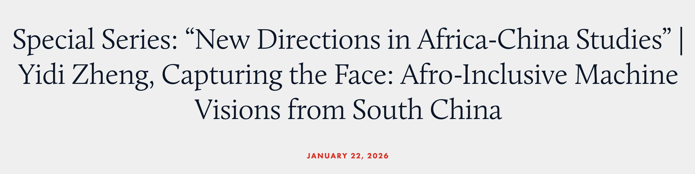

Capturing the Face: Afro-Inclusive Machine Visions
Jan. 22 2026

Published in Critical Asian Studies commentary board, as part of the Special Series: New Directions in Africa-China Studies. This article invites a critique of the techno-optimism surrounding the Chinese-designed Afro-inclusive facial recognition technologies.